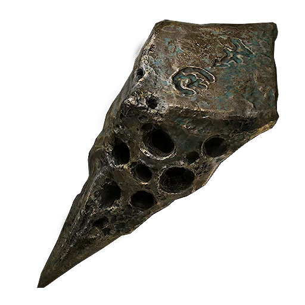
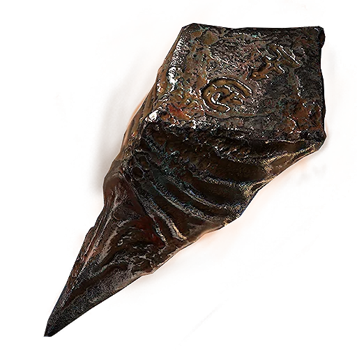
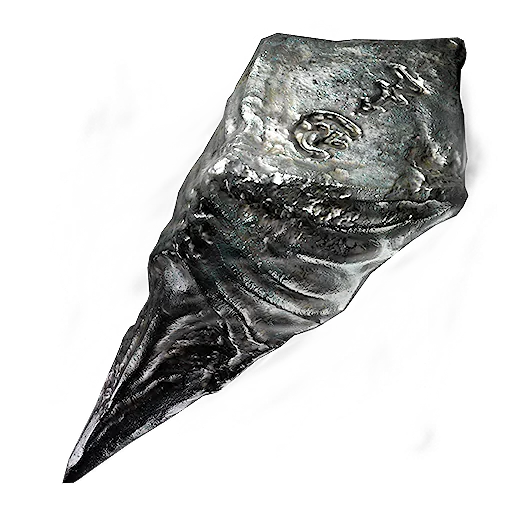
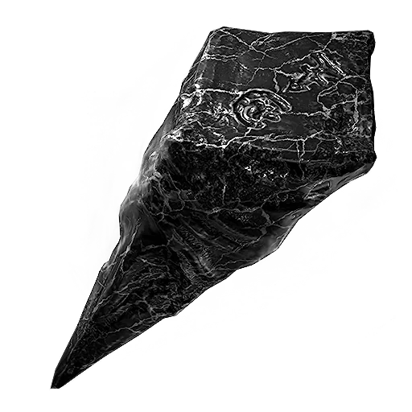
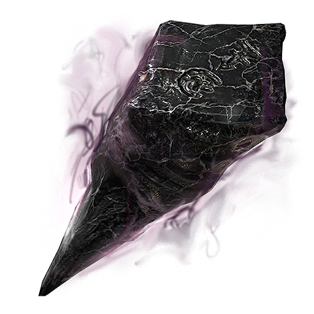
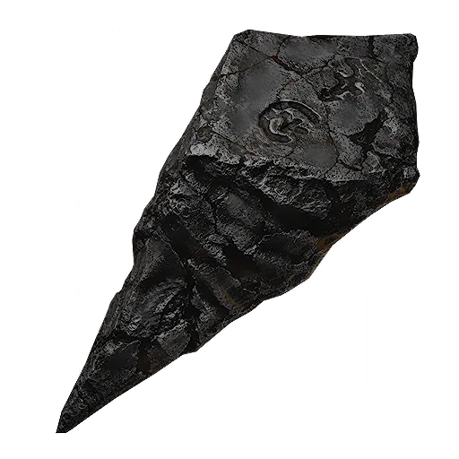

Ventrium
Primary weapons · Lv. 1–5
Collectibles / combat database
Find all eight Tarforge-upgradeable primary weapons. Seven pages use original annotated acquisition routes; The Iconoclast has a separate automatic-unlock guide.
All unlock guides live: every primary weapon now has a dedicated location or unlock page. Want one practical first target? Read why Great Martyr's Blade is our early-game pick.
Tarforge
Material sequence confirmed from the primary-weapon progression data. Ossinite and Futilium are present in the game files; their exact primary-weapon use remains under verification.

Primary weapons · Lv. 1–5

Primary weapons · Lv. 6–10

Primary weapons · Lv. 11–15

Primary weapons · Lv. 16–20

Tarforge use being verified

Tarforge use being verified
Exceptionally light for a two-hander, it was once held by a seedbearer of great renown.
Attack kit: three-step light combo, three-step heavy combo, running attacks, hold variants and finisher branches.
Read the The Iconoclast automatic-unlock guide.
An unusual pairing of a simple thief's tool and a vicious axe from the northern lands.
Attack kit: three-step light combo with double-attack branches, three-step heavy combo, running attacks and hold variants.
Get the annotated Axe & Dagger route.
This solid steel axe is rumored to have been quenched in the blood of the Revered.
Attack kit: three-step light and heavy combos, running attacks, hold variants and finisher branches.
Get the annotated Veteran's Battle Axe route.
The devout weapon of the First Martyr Tarsus, reforged after his final sacrifice.
Attack kit: three-step light and heavy combos, running attacks, hold variants and finisher branches.
Get the annotated Great Martyr's Blade route.
A brutalist chunk of obsidianite, profaned by bloodshed beyond the Seat of Infinity.
Attack kit: three-step light and heavy combos, running attacks, hold variants and finisher branches.
Get the annotated Obsidian Hammer route.
Forged by an unrepentant smith, this exquisite weapon once bore the name “Dream Thresher.”
Attack kit: separate axe and katana attack assets, including combo, running and hold-attack branches.
Get the annotated Axatana route.
Stolen from the Twiceborn, this spear enables the bearer to reach further and more quickly than seems physically plausible.
Attack kit: three-step light and heavy combos, running attacks, hold variants and finisher branches.
Get the annotated Black Needle route.
The ambitious instrument of a madman or a genius, perhaps he was in fact both.
Attack kit: three-step light and heavy combos, running attacks, hold variants, finisher branches and a grinder ability with a periodic Resolve drain.
Get the annotated Clockwork Scythe route.
Original acquisition routes and gameplay captures last reviewed 29 August 2026. Base damage, item text and attack-kit structure use the supplied game data. Recorded upgrade-level values are a data snapshot, not a statement of the final enhancement cap.
Upgrade Materials & Tarforge Costs — Five material tiers, per-level fees and enhancement unlocks.
Upgrade Materials & Tarforge Costs — Five material tiers, per-level fees and enhancement unlocks.